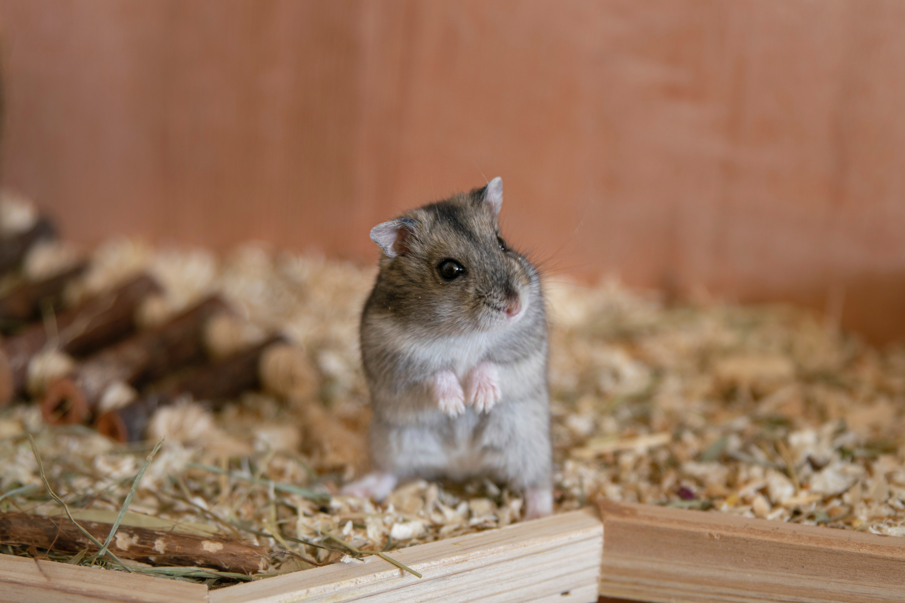
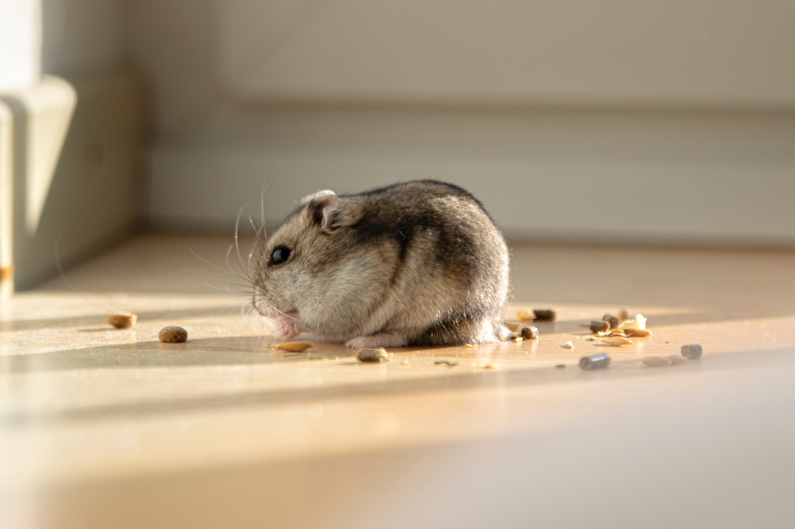
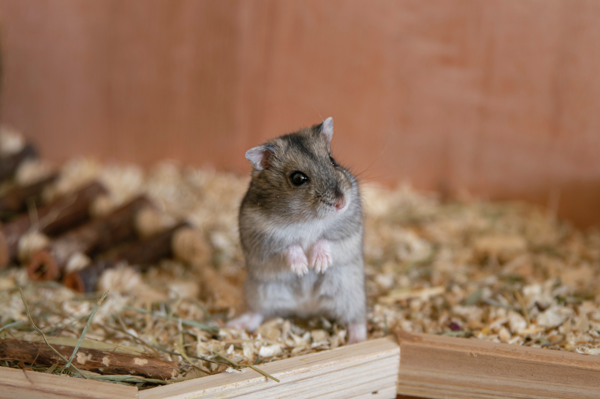
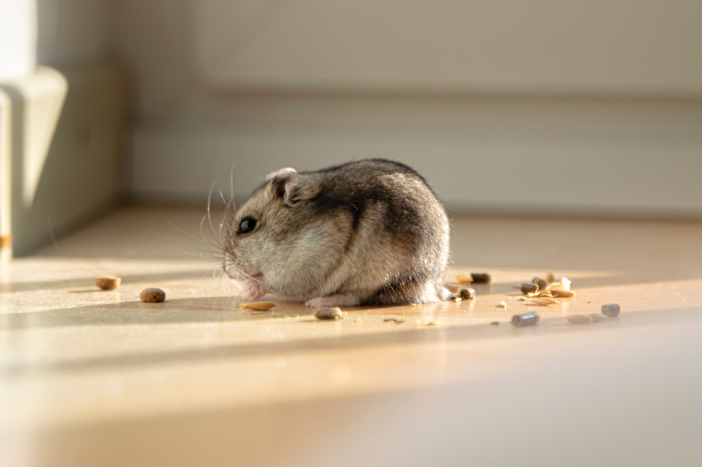

Roborovski Hamster
"The smallest and fastest of any hamster, the Rob or Robo is about the size of a bean when born and when fully grown is no bigger than an adult's thumb, or 2 to 3 inches. These shy little creatures originated in the deserts of Mongolia, China, and Russia. Dwarf Roborovski hamsters are curious beings that don't like to be held.1 They are content to socialize with their own kind while you watch from outside their home.(The Spruce Pets,'Caring For Roborovski Hamsters')"
Syrian Hamster
The golden hamster or Syrian hamster (Mesocricetus auratus) is a rodent belonging to the hamster subfamily, Cricetinae.[2] Their natural geographical range is limited to a small arid region of northern Syria and southern Turkey. Their numbers have been declining in the wild due to a loss of habitat from agriculture and deliberate elimination by humans.[1] Thus, wild golden hamsters are now considered Vulnerable by the International Union for Conservation of Nature.[3] https://en.wikipedia.org/wiki/Golden_hamster
Winter White Hamster
The winter white dwarf hamster (Phodopus sungorus), also known as the Russian dwarf hamster, Djungarian hamster, striped dwarf hamster, Siberian hamster, or Siberian dwarf hamster, is one of three species of hamster in the genus Phodopus. It is ball-shaped and typically half the size of the Syrian hamster, so is called a dwarf hamster along with all Phodopus species. Features of the winter white hamster include a typically thick, dark grey dorsal stripe and furry feet. As winter approaches and the days shorten, the winter white dwarf hamster's dark fur is almost entirely replaced with white fur. In captivity, this does not usually happen as animals maintained as pets are generally housed indoors and exposed to artificial light that prevents the recognition of short winter daylengths. In the wild, they originate from the wheat fields of Kazakhstan, the meadows of Mongolia and Siberia, and the birch stands of Manchuria. https://en.wikipedia.org/wiki/Winter_white_dwarf_hamster
Chinese Hamster
The Chinese hamster (Cricetulus griseus or Cricetulus barabensis griseus) is a rodent in the genus Cricetulus of the subfamily Cricetidae that originated in the deserts of northern China and Mongolia. They are distinguished by an uncommonly long tail in comparison to other hamsters, most of whose tails are stubby. Chinese hamsters are primarily nocturnal, however they will stay awake for brief periods, in between naps, throughout the day. https://en.wikipedia.org/wiki/Chinese_hamster
Cambell Hamster
Campbell's dwarf hamster (Phodopus campbelli) is a species of hamster in the genus Phodopus. It was given its common name by Oldfield Thomas in honor of Charles William Campbell, who collected the first specimen in Mongolia on July 1, 1902. It is distinguished from the closely related Djungarian hamster as it has smaller ears and no dark fur on its crown. Campbell's dwarf hamster typically has a narrow dorsal stripe compared to the Djungarian hamster and grey fur on the stomach. This hamster may be raised in captivity and kept as a small pet. https://en.wikipedia.org/wiki/Campbell%27s_dwarf_hamster